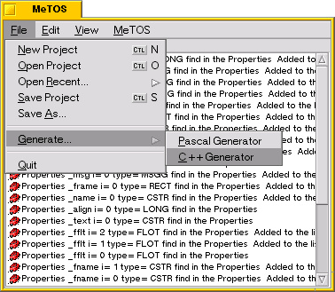
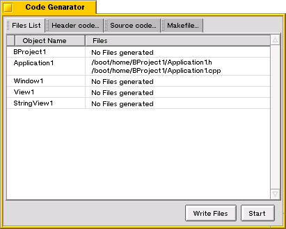

Erstellen- und Schreiben von C++ Codes...
Um mit MeTOS Code zu erstellen, brauchen Sie die Generators.
Generators können Sie über das MeTOS Menü anwählen.

Zur Zeit kann nur der C++ Generator genutzt werden!
Der C++ Generator zeigt nach Betätigen der Starttaste, das Resultat des C++ Codes
an und das Programm wird erstellt.

Wenn ein Objekt abgeleitete Eingenschaften hat, werden in diesem Fenster die C++
und Header Dateien erstellt.
Um diese Dateien zu erstellen, drücken sie auf die Write Taste.
Die Dateien werden den Dateipfad vom dem Projekt geschrieben.
In dieser Version wird ein Makefile mit erstellt, aber Sie können dies in den Setting
(Einstellungen) ausschalten.
Anfang
- CKJ - Vincent Cedric
Copyright (c) 2000-2004.
translation by Lelldorin 2004